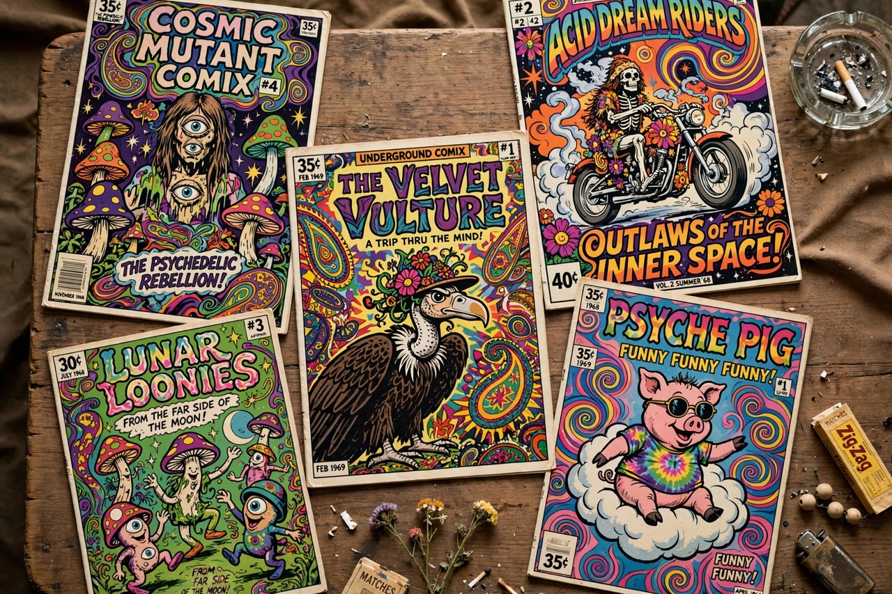

Underground comix

Underground comix are small press or self-published comic books, usually socially relevant and satirical in nature, that emerged in the United States in the late 1960s and early 1970s as part of the counterculture. Unlike mainstream comics, which were governed by the censorious Comics Code Authority, underground comix dealt freely with sex, drugs, politics and violence, and were typically sold in head shops rather than newsstands.
History
The movement's landmark publication was Robert Crumb's Zap Comix (1968), published in San Francisco by Apex Novelties. Other key figures included S. Clay Wilson, Gilbert Shelton (creator of The Fabulous Furry Freak Brothers), Spain Rodriguez, Victor Moscoso, Robert Williams, and Art Spiegelman and Bill Griffith, who co-edited the short-lived but influential Arcade (1975–1976). Publishers such as Rip Off Press, Last Gasp and Kitchen Sink Press sustained the scene.
Women cartoonists, often marginalised in the male-dominated undergrounds, produced feminist titles such as Wimmen's Comix (founded 1972) and Tits & Clits, featuring Trina Robbins, Aline Kominsky-Crumb and Diane Noomin.
Decline and influence
The scene declined in the mid-1970s as head shops closed, a 1973 Supreme Court ruling made prosecuting "obscene" material easier, and the counterculture faded. Its legacy was immense: complete creative freedom for cartoonists, the direct market for comics, and the alternative comics of the 1980s — including RAW — all grew directly from the undergrounds.